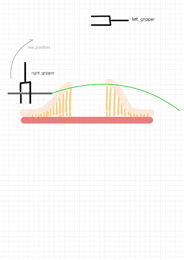
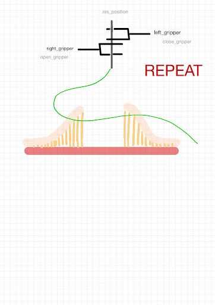
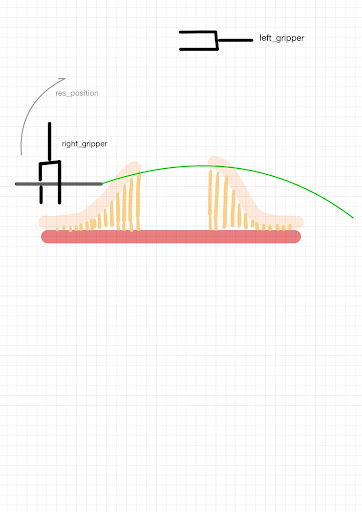
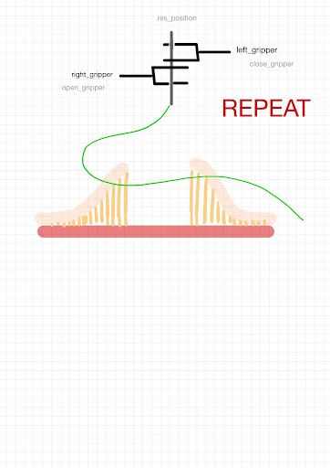
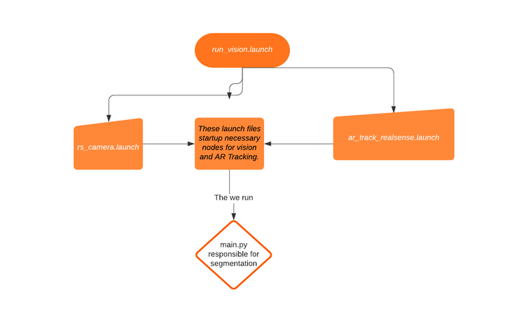
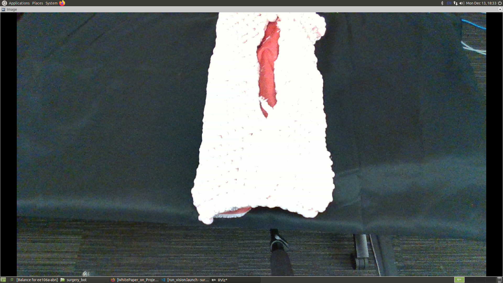
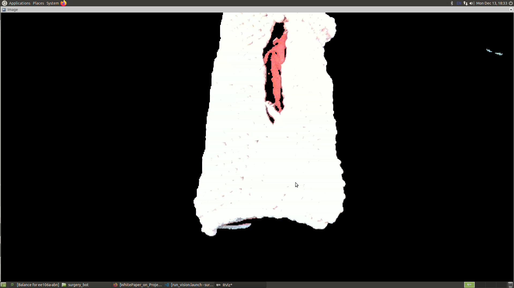
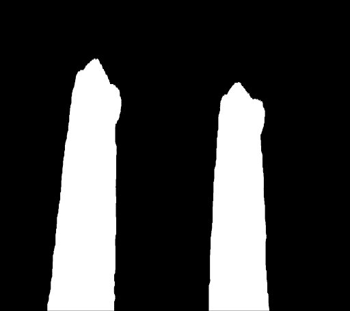
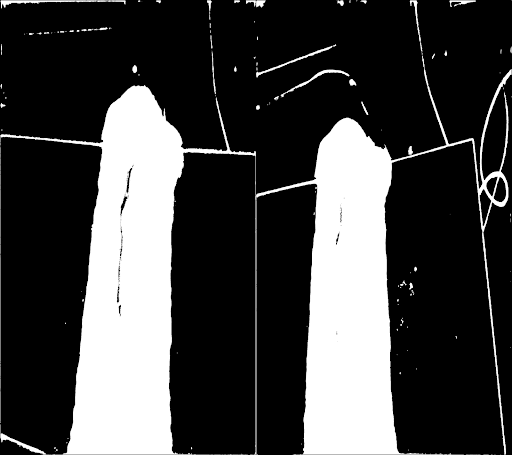
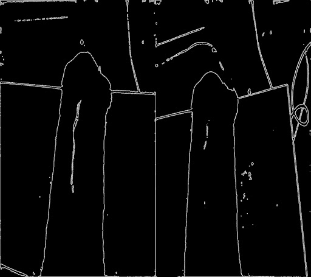

Software
What's included
Planning Package
Contains code to move Baxter's arms to perform suturing
Vision Package
Contains code to project Realsense camera's pointcloud onto Baxter's base frame and image segmentation code
Planning

To start up the Surgery Robot, run_planning.launch and run_vision.launch is run. These launch files start up the necessary nodes such as the trajectory action server and the Realsense camera.
After the required nodes are up, suture.py is run.
The robot proceeds to calibrate its grippers and ask the user to place the needle into its grip and to ready the patient in its workspace.
The robot then assumes its rest position and ask the user for the number of sutures the user would like the robot to perform.
The user then selects the desired points of entry in RVIZ using the Publish Point Tool.
The the robot proceeds to suture.
 



To generate the suture trajectories, 6 key poses are used. These poses are grouped into 2 set: entry and exit.
The entry set consists of the entry, insert, and release poses. The entry pose defines the pose of before the needle is inserted into the patient. The insert pose defines the pose of needle insertion. The release pose defines the intermediary pose before the robot returns its rest pose. These pose are used exclusively by the left gripper.
The exit set consists of the entry, insert, and release poses. The grip pose defines the pose for the gripper to interact with the needle. The exit pose defines the pose where the needle completely exits the patient. The return pose defines the intermediary pose before the robot returns its rest pose. These pose are used exclusively by the right gripper.
The rest pose the robot assumes is used to hand over the needle before performing the next suture. This a sideways pose was chosen to provide more clearance since the Baxter wrist are quite large.
Vision
The vision component of our software includes running two launch files.
- The rs_camera.launch is a custumized version of the realsense rs_camera.launch. This starts the realsense nodes and starts sending messages through different topics such as RGB, Pointcloud...etc.
- The ar_track_realsense.launch file integrates lab 4 (AR Tracking) with a realsense camera. This launch file takes care of the frame transformation between realsense and baxter frame after calibration.
After these launch files are run, running main.py will add additional topics such as \segmented_workspace which is a segmented image of the surgery robots workspace. This will get rid of unnecessary noise and only keep the patient model and the table.
Raw Image
Segmented Image
Note: After the presentation, we built a CNN model for image segmentation. Despite our limited training data set, we were able to get by relatively well. However, we were not able to test out our CNN model live due to the unavailability of the torchvision on lab computers.
We strongly believe this model has the potential to get a more reliable segmented pointcloud in Rviz.
Ground Truth
Predicted by our CNN model. Edge artifacts, perhaps due to lack of thousands of training images.
Canny edge detection
Prediction subtracted with Gaussian blurred edges gives a very good final segmentation.